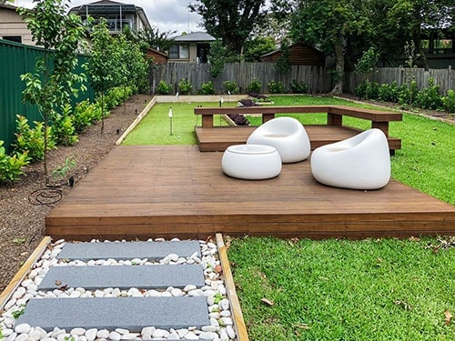
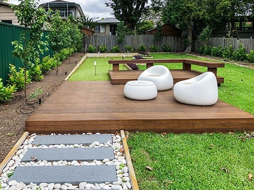

About Green Thumb Landscaping
Our Roots in Ireland
Green Thumb Landscaping got its roots in one of the greenest, most picturesque landscapes in the world - Ireland. The lush countryside of owner and operator John Duaneís homeland is known to have ì40 Shades of Green.î
Our Team
Today, John employs the most knowledgeable, capable and hardworking team. Each member contributes their own individual talents and strong suits, but they all have one thing in common - commitment to providing customers with quality products and courteous services.
Our Services
From regular lawn maintenance and installing sandstone steps to laying simple pathways and designing complex custom yards, our diverse team has the qualifications to make your vision reality.
Our works
 


Lawn Maintenance
We take pride in even the smallest project, and are meticulous down to the last blade of grass. We take a customer-first approach to everything we do.
Custom Landscaping
Our team is creative, courteous, thorough and efficient, and communicates every step of the way to ensure your expectations are met.
Our Commitment to Quality
Green Thumb Landscaping treats outdoor spaces like indoor spaces. Rocks and debris are picked up and removed, entertaining areas and driveways are blown free of dust and dead and decaying vegetation is pruned away. No clean up required. When the work is done, the only thing left for you to do is kick up your feet and bask in your picture-ready surroundings. And you may not even know we were there.